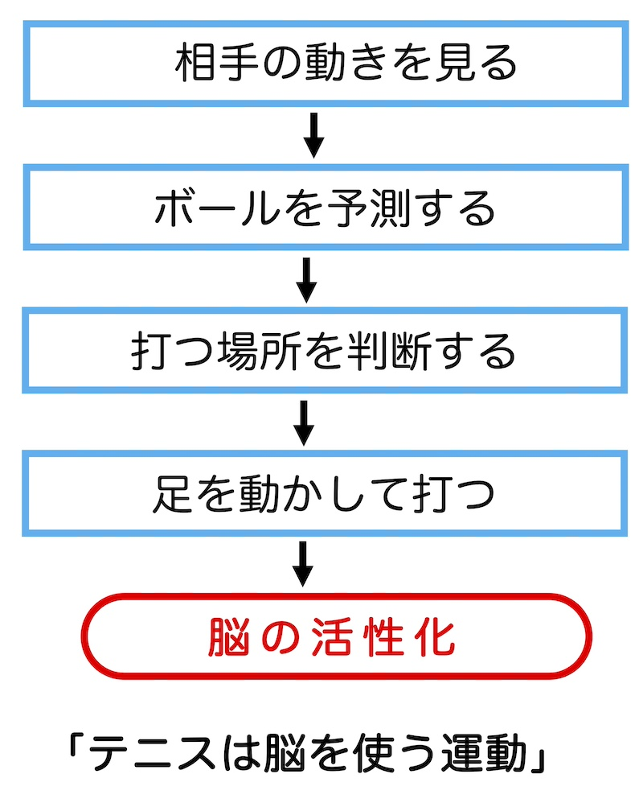
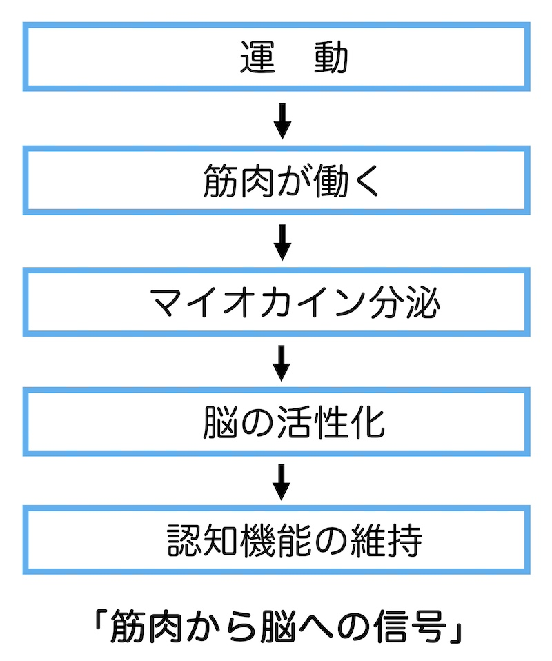
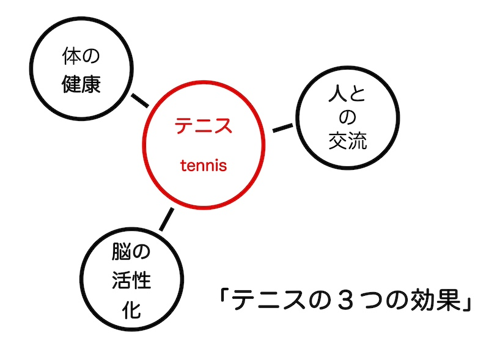

公開日：2026年3月｜最終更新：2026年5月
近年の研究では、運動習慣のある人は、運動をしない人に比べて認知症の発症率が低いことが分かってきました。特に、週に150分以上の中程度の運動を続けている人では、認知機能の低下がゆるやかになると報告されています。参考文献1)
その中でも注目されているのが、対人スポーツである「テニス」です。
テニスのように、
といった「頭と体を同時に使う運動」は、脳への刺激が大きいと考えられています。

また、テニスは、
といった特徴があり、これらも認知症予防に重要な要素とされています。
ある大規模な追跡研究では、ラケットスポーツを行っている人は、運動をしていない人に比べて死亡リスクが低いという結果も報告されています（デンマークの大規模調査、別頁で）。
認知症予防において最も大切なのは、「無理なく、楽しく、長く続けること」です。その意味でも、テニスは生涯スポーツとして非常に優れた運動と言えるでしょう。
テニスは高齢者にとっても安全で効果的な運動ですが、大切なのは「無理なく続けること」です。
認知症予防や健康維持の観点からは、次のような頻度と強度が目安になります。
【頻度】
週2～3回程度のテニスが理想的です。1回30～60分程度のプレーでも十分な効果が期待できます。
【強度】
「少し息が弾むが、会話はできる」程度の強さが適切です。目安としては、
この程度が理想です。
【時間の目安】
週合計で150分程度の中等度運動が推奨されています。
【注意点】
大切なのは「上手に続けること」です。楽しみながら続けるテニスは、心と体の両方の健康に役立ちます。

テニスは、体だけでなく脳も同時に使う運動です。
この一連の流れは、脳の前頭葉（判断力）、頭頂葉（空間認識）、小脳（運動調整）など、複数の領域を同時に、刺激し、働かせます。
また、ラリーやゲームでは、
といった「考える動作」が常に必要になります。

このように、テニスは「体の運動」「頭の運動」「人との交流」が同時に行われるため、脳の機能維持に役立つ運動と考えられています。